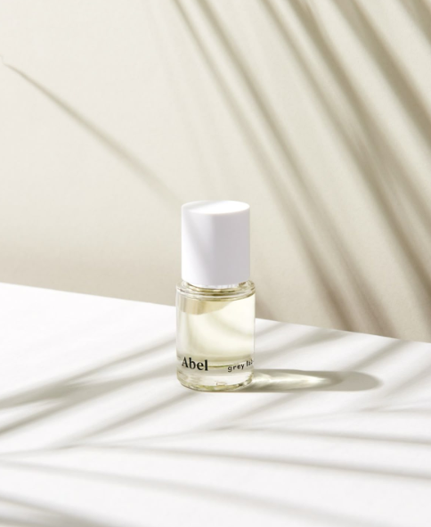
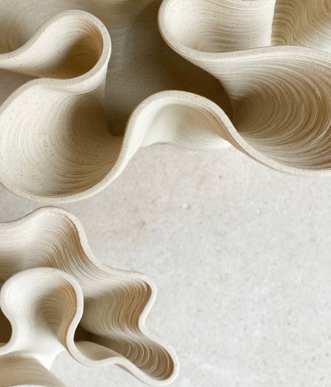
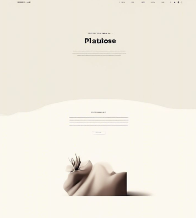
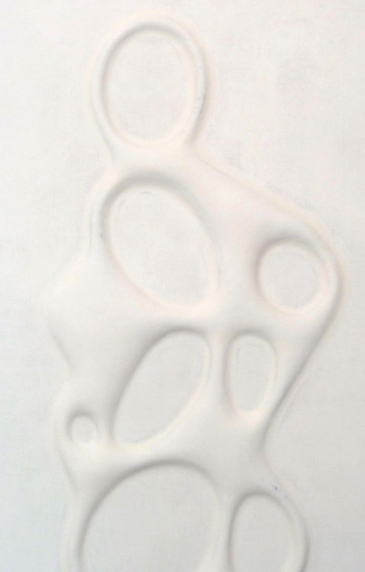
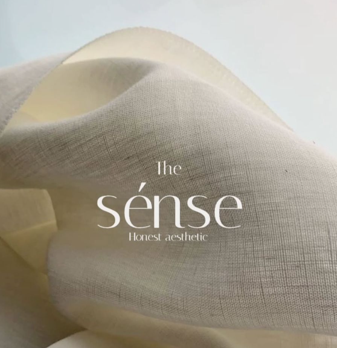
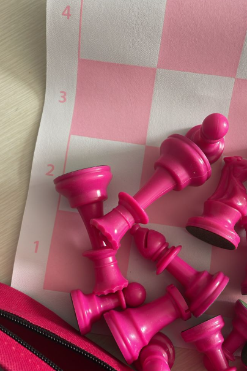

Designing intentional experiences through code and clarity.
I’m Tracey‑Marie, a front‑end developer and emerging UI designer based in London, UK. I build clean, responsive, and visually thoughtful interfaces that merge structure with creativity. My work blends modern web development with design systems and brand identity — creating digital experiences that feel human, modern, and meaningful.

Table of Contents

- 01 my vision
- 02 about me
- 03 brand
- 04 portfolio
- 05 inspiration
- 06 contact me
01 my vision
I create digital experiences that feel intentional, modern, and
human. My work blends front‑end development with
emerging UI design, bringing clarity, structure, and personality into every project.

As I grow into UI and web design, my focus is on building a design
identity that
is
recognisable, thoughtful, and rooted
in my own creative direction — PinkGridStudios™.
Through this, I
aim to merge
technical
skill with visual storytelling, shaping experiences that are both functional and
beautifully considered.
02 about me
I’m a front‑end developer with a growing passion for UI and web design. I care about building digital experiences that feel clear, structured, and thoughtfully crafted.

I’m driven by precision and clarity — the kind of design that feels effortless because every detail has purpose. I value warmth and approachability, bringing personality into my projects through colour, typography, and layout.
As of now, I am currently expanding my skills into UI/UX, design
systems, and
brand
identity.
PinkGridStudios™ is the foundation of
that journey — a space where I explore visual direction, creative strategy, and the
intersection between design and
development.

Based in South London, UK — working hybrid and remote.
03 portfolio
My portfolio is a collection of projects that reflect my growth as a front‑end developer and emerging UI designer. Each piece demonstrates my commitment to clean code, thoughtful design, and creating digital experiences that feel intentional and human.

Soreil Weather Forecast.
A responsive weather app using HTML, CSS, JavaScript, and API
data. Designed with a clean
layout and simple
interactions. Focuses on clarity, usability, and modern front‑end structure.
Tags: Front‑End • API • UI • Responsive

AI Quote Generator
A minimal quote generator built with JavaScript.Delivers
random
quotes through a
calm,
editorial interface. Shows my
interest in micro‑interactions and clean UI.
Tags: JavaScript • UI • Micro‑Interactions

AI Poem Generator
A simple poem generator built with JavaScript.Creates short,
expressive
poems through a
minimal, calm
interface. Focuses on typography, spacing, and lead of interaction.
Tags: JavaScript • UI • Micro‑Interactions
04 brand
A calm, modern visual identity built on warm neutrals, soft lighting, and intentional detail.

A modern creative studio crafting intentional, luxury‑minimal digital designs.
Studio Tones

- Chess Pink + Maine → confident & structured
- Porcelaine White + Off‑Pearl → soft & editorial
- Muted + Maine → modern precision

05 inspo
A curated mix of visuals, textures, and tones that shape the PinkGridStudios™ aesthetic.

soft precision
feminine clarity

structured softness
modern calm

editorial minimalism

thin-line geometry

minimal branding

chess pink palette
Concept Notes
soft precision · modern detail · feminine nuance · editorial calm · intentional clarity
A visual archive shaping the PinkGridStudios™ aesthetic — modern detail, softened.
06 contact me
I’m always open to new opportunities, collaborations, creative projects, and design conversations.
email: traceymariebokola@outlook.com
linkedin: traceymarie88
github: tiamuse88